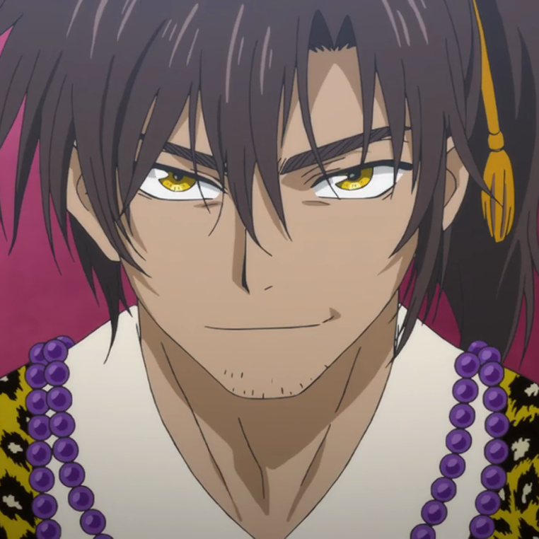

Yoon is an orphan who was raised by a priest, Ik-Soo,
as a child. Because of his feminine appearance, he is often teased; however,
he is very intelligent. Yoon had a dream to explore the world and learn
more about its wonders, but did not act on it so he was able to take care of Ik-Soo.
However, Ik-Soo convinces him to leave with Yona and the others and pursue
dreams of his own.
Ik-Soo
Ik-Soo was the former High Priest of Kouka Kingdom
before he was thrown out by Soo-Won's father as a child. He spends most of his time
praying to the Gods for happiness of the people. He is the one who reveals
the four Dragons to Yona and initiates her quest.
Son Mundok
Son Mundok is the former general of the Wind tribe, and
Hak's adoptive grandfather. Even though he may seem to be tough, he genuinely
cares about the others in the Wind tribe and the royal family. He has another adopted grandson,
Tae-Yeon.
Kan Tae-Jun
Kan Tae-Jun is the second son of the Fire tribe general,
Kan So-Jin. His desire to inherit the throne led him to pursue Yona and Hak
when they were forced out of the castle. In this clash, Yona and Hak fell
off of a cliff, which led Tae-Jun to believe that he had killed them. However, they had survived,
and were found and healed by Yoon later on.
Lee Geun-Tae
Lee Geun-Tae is the head of the Earth tribe who answers
to Soo-Won after a Battle Game Festival against him, in which he realizes
the true intelligence of the King. He is admired by his tribe for his
bravery and strength in battle.

Ahn Lili
Ahn Lili is the daughter of the Water tribe general,
Ahn Joon-Gi. Her mission is to stop the drug problems that exist in her tribe.
Originally, she looks down upon Yona and her friends, but learns to trust
them after she learns that their mission is quite similar to her own.
After a joint effort from Soo-Won and Hak saves her from being hung, she
appreciates all that everyone has done for her, and starts to complete
her goals on her own. She is a common ally between Soo-Won and Yona,
trusted by both sides.